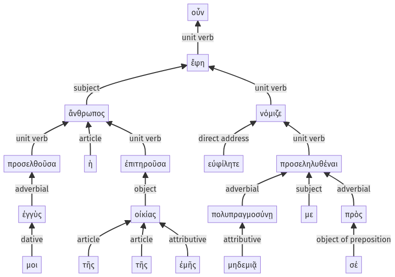

Lysias 1, 1.15.51-1.15.70a
1.15.31-1.15.50a | 1.16.1-1.16.15a
Sentence 38
1.15.51-1.15.70a
προσελθοῦσα οὖν μοι ἐγγὺς ἡ ἄνθρωπος τῆς οἰκίας τῆς ἐμῆς ἐπιτηροῦσα, "εὐφίλητε "ἔφη "μηδεμιᾷ πολυπραγμοσύνῃ προσεληλυθέναι με νόμιζε πρὸς σέ:
2 προσελθοῦσα μοι ἐγγὺς
1 ἡ ἄνθρωπος
2 τῆς οἰκίας τῆς ἐμῆς ἐπιτηροῦσα
2 εὐφίλητε
1 ἔφη
2 μηδεμιᾷ πολυπραγμοσύνῃ προσεληλυθέναι με
2 νόμιζε
2 πρὸς σέ
προσελθοῦσα οὖν μοι ἐγγὺς ἡ ἄνθρωπος τῆς οἰκίας τῆς ἐμῆς ἐπιτηροῦσα, "εὐφίλητε "ἔφη "μηδεμιᾷ πολυπραγμοσύνῃ προσεληλυθέναι με νόμιζε πρὸς σέ:
Highlighting:
- connecting words
- unit verb
- subject
- object
Color code:
- Independent clause (level 1, transitive verb)
- circumstantial participle (level 2, intransitive verb)
- circumstantial participle (level 2, transitive verb)
- quote (level 2, transitive verb)
- indirect statement with infinitive (level 2, transitive verb)
